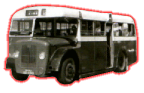
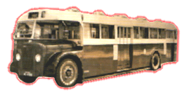

Guy
- Arab Mk V

 |
引擎 Engine
容積 Engine Capacity 波箱 Gearbox
車身 Body Build 體積 Volume
載客量 Passenger
服役年份 Year |
: Gardner 6LX (135bhp) [Short-wheel] Gardner 6LX (150bhp) [Long-wheel] : 不詳 : Guy Semi-automatic Gearbox Daimatic Semi-automatic Gearbox : Metal Sections : 7645L X 2438W X 2997H(mm) [S-wheel] 10846L X 2438W X 2997H(mm) [L-wheel] : L30 S18 [S-wheel] L34 S56 [L-wheel] : 1963 - 1975 |
Guy Arab V [佳牌亞拉伯五型]，可算是中巴的標誌，一個型號能夠行走 30 多年，而且非常健康，實在難得。最初 106部短車軸的設計，與兄長 Arab IV 十分相似，而較特別的是，同期引入了一批 40 部長度接近 11 米的長車，載客量達到 90 人之多，大大舒緩了柴灣對外交通，的確帶來了一點驚喜，因為當時車子真的十分長啊!!! 而巴士冷卻水箱頂，有一個紅番頭像公仔，此乃是 Guy 牌的標誌，所以 Guy Arab V 又被行內人稱為 [紅番頭] 了。雖然大部份 Arab V 最後都成為雙層巴士為大家服務，但是在單層時的豐功偉績，尤以擁有大馬力來輕易征服花園道、薄扶林道、半山區及山頂一帶，簡直叫人歡呼!!!